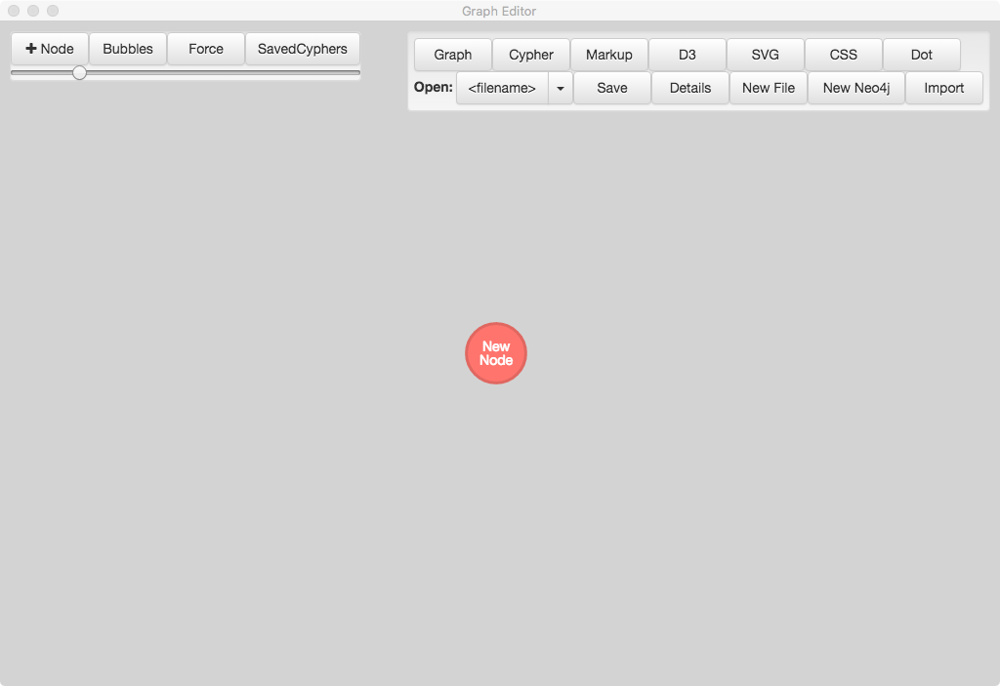
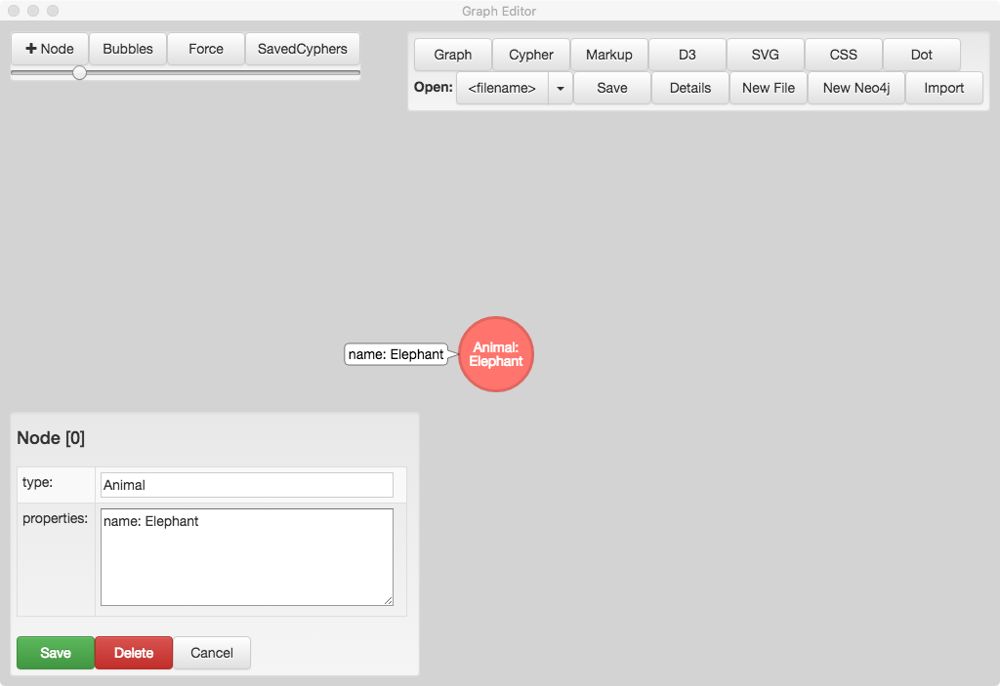
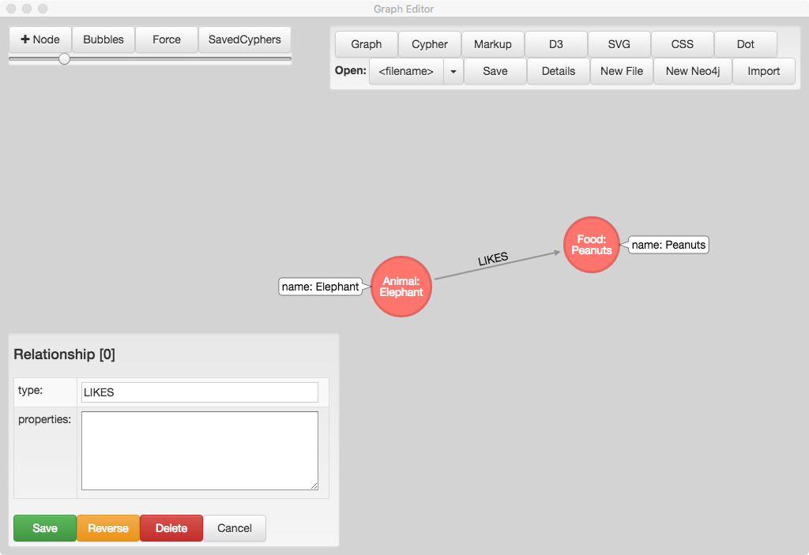
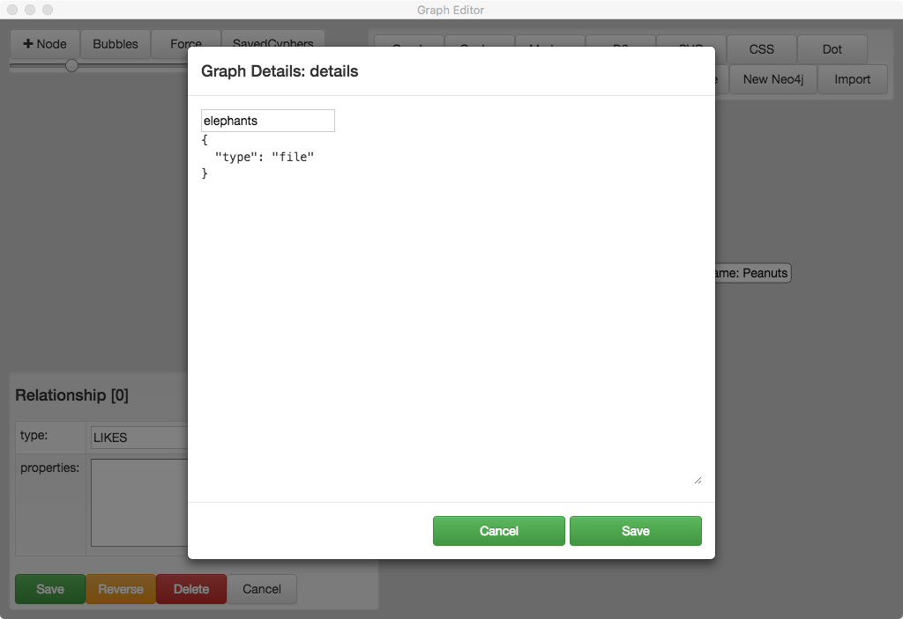
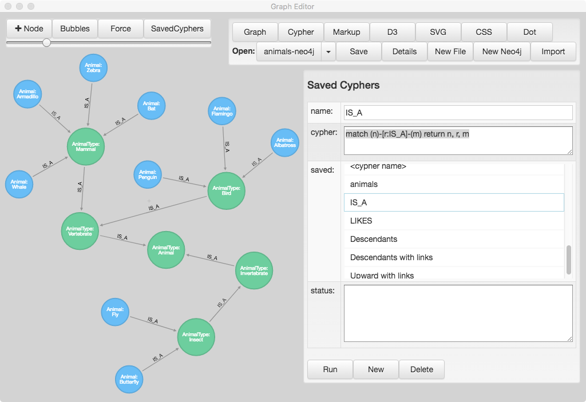
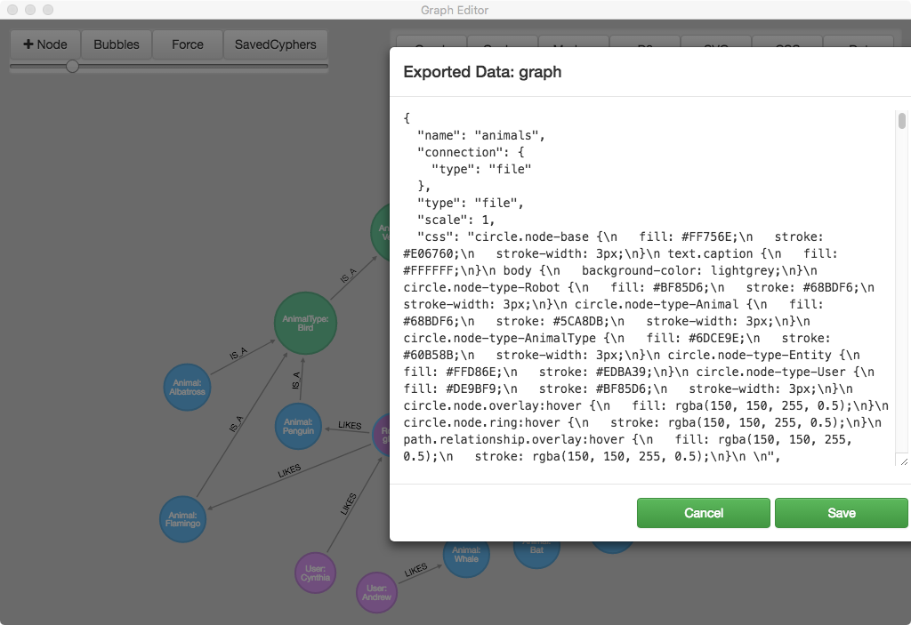
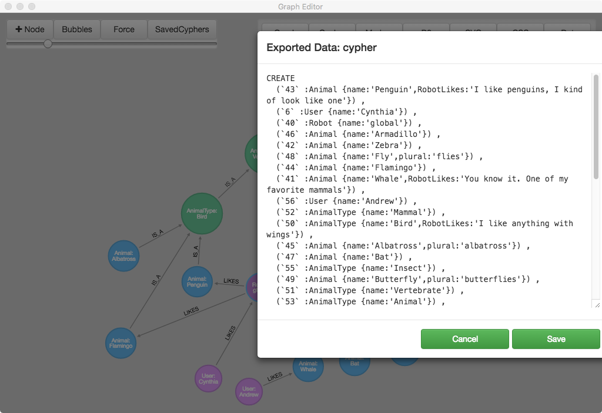
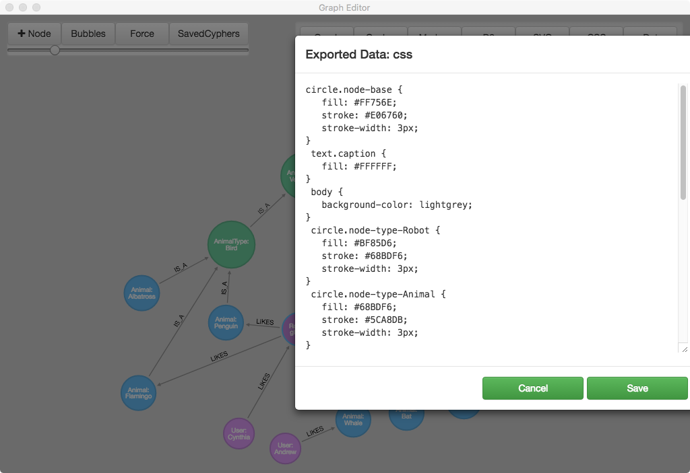

graph-editor
Subject: Graph Editor
Language: TypeScript (node), React, Electron, webpack
Repo: git@github.com:wwlib/graph-editor.git
Related: Neo4j Knowledge Graph Example: https://wwlib.github.io/neo4j-knowledge-graph/
https://wwlib.github.io/graph-editor/
https://github.com/wwlib/graph-editor
https://wwlib.github.io
Graph Editor is a tool for viewing and interactively editing Neo4j graphs. It can also be used to create, edit and share simple graph layouts using a json file format.
Note: Graph Editor is uses the Graph Diagram library (https://wwlib.github.io/graph-diagram/) which is a TypeScript port of a graph-editing project called Arrows, originally created by Alistair Jones at Neo4j (http://www.apcjones.com/arrows/).
Getting Started
build
git clone git@github.com:wwlib/graph-editor.git
cd graph-editor
yarn
yarn dev
New Graph
When Graph Editor starts it presents a new empty graph. The most common actions include:
- New node: click the + Node button (top left) or drag a new node by clicking on the perimeter of an existing node and dragging.
- Link two nodes: Click on the perimeter of the source node and drag onto the target node
- Edit a node/link: double-click on the node/link
- The node/link type will be displayed on the node/link
- For nodes that have a name property, the name will also be displayed on the node
Save a graph
- Click the Save button in the file panel (top right)
- If prompted, enter a file name in the file details dialog
- Click the Save button in the file panel (top right)
Import a graph json file
- Click on the Import button in the file panel (top right)
- Navigate to a valid Graph Editor json file
- Click the Save button in the file panel (top right)
Export a graph
- (manual, for now). Click on the Graph button in the file panel (top right)
- Copy the contents of the Export dialog into a new file (using a text editor)
- Save the file with a json extension. i.e. my-graph.json
Connect to a neo4j graph
- Click the New Neo4j button in the file panel (top right)
- Give the file (connection) a name
- Fill out the url, user, and password fields.
- The initialCypher field is optional and can be blank
- Click the Save button in the file panel (top right)
Local, Static Graphs





Connecting to Neo4j

Neo4j: Saved Cyphers

Import and Export


